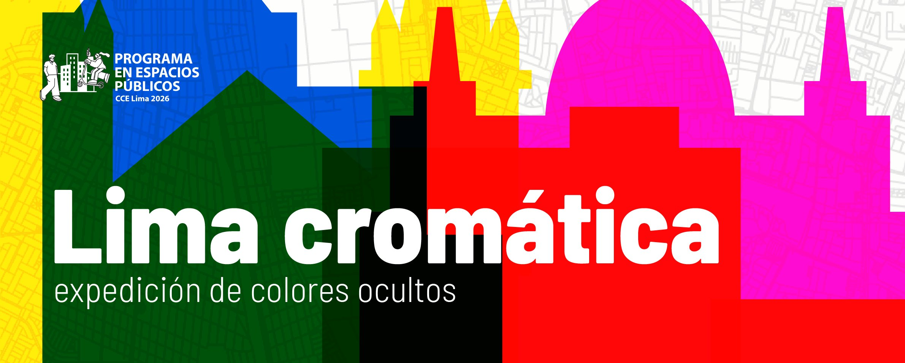
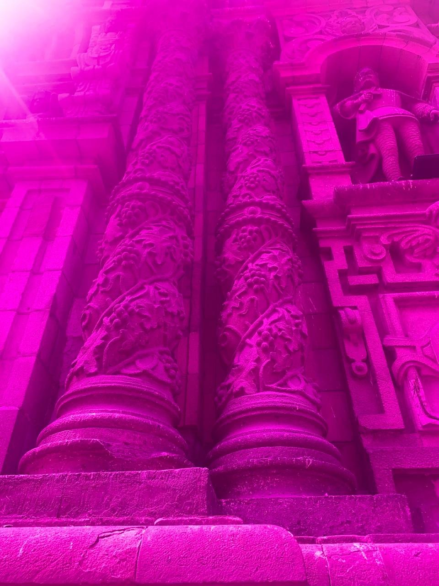
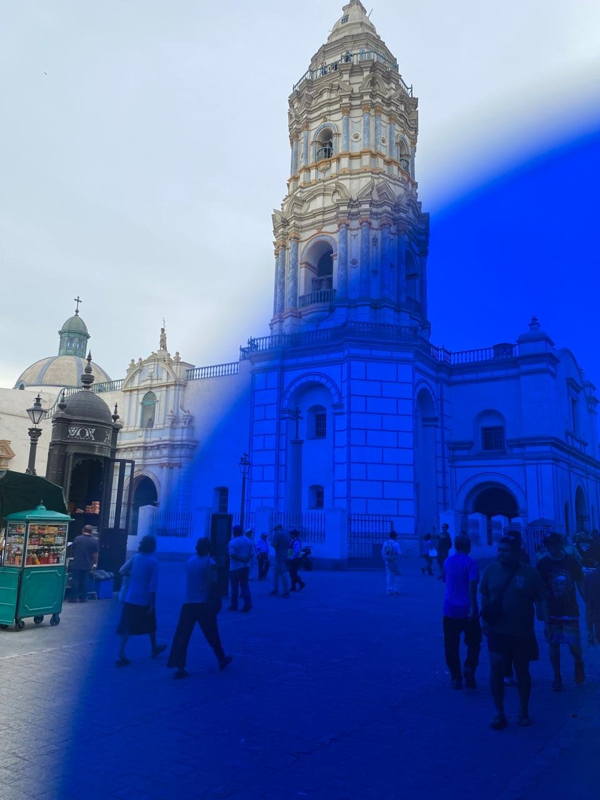
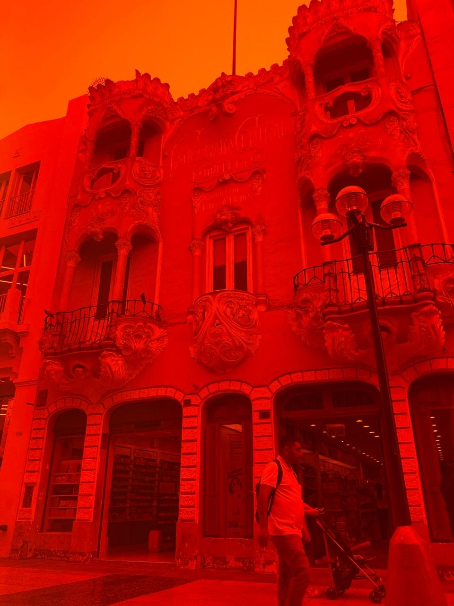
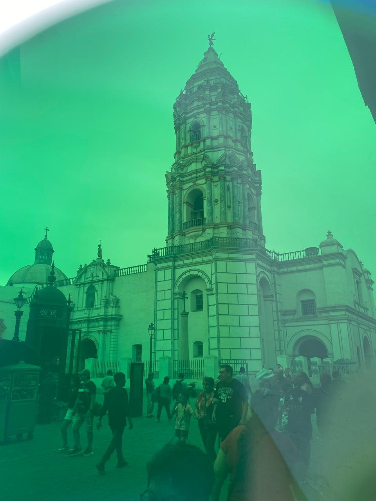
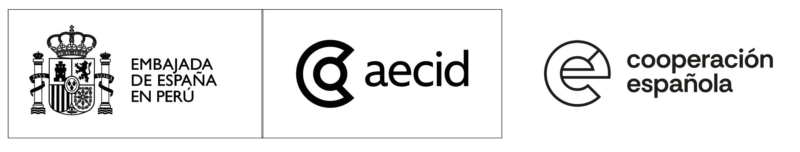
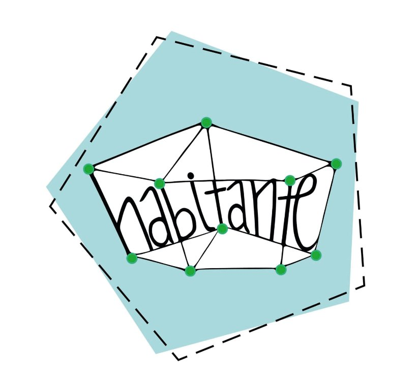
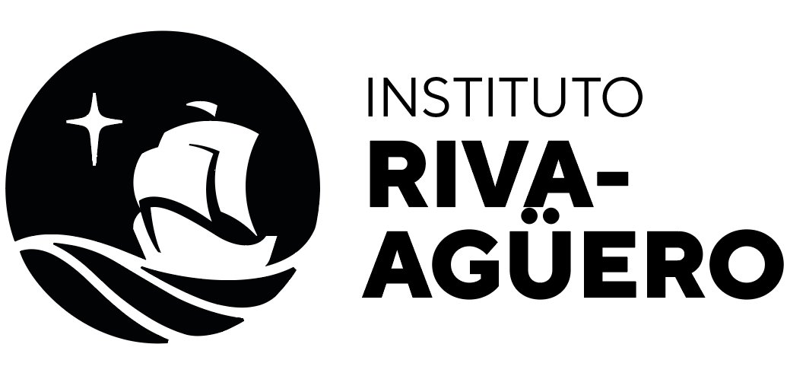

— El proyecto
Proyecto desarrollado por Camila Bustamante, coproducido con el Centro Cultural de España en Lima, dentro de la convocatoria de proyectos artísticos para espacios públicos en Lima 2026.
El proyecto plantea una experiencia sensorial que transforma la manera de observar la ciudad mediante filtros cromáticos. A través de caminatas guiadas y kits portátiles, los participantes exploran una ruta de nueve estaciones clave del centro limeño.
Cada kit incluye visores de madera prensada con filtros de acrílico —ámbar, magenta, azul y amarillo— y un mapa ilustrado que orienta la ruta. Los visores no solo cambian el color de lo que se ve: abren una pregunta sobre el tiempo. ¿De qué color fue esto? ¿De qué color podría ser? El color como archivo vivo.
El proyecto cuestiona la idea de Lima como una "ciudad gris", poniendo en valor la riqueza cromática de su patrimonio arquitectónico. Más allá de la experiencia inmediata, los kits funcionan también como objetos coleccionables, extendiendo el vínculo del público con la iniciativa.
"El color como archivo vivo: ¿de qué color fue esto? ¿de qué color podría ser?"
— Las estaciones
— Cuándo
Las estaciones son guiadas, libres y gratuitas. Dirigidas al público general a partir de 12 años. Duración: 2 horas (10:00am a 12:00m).
— Galería colectiva
Cada foto que compartes suma a un archivo visual colectivo de la ciudad. Sube tu imagen, ponle nombre al color que encontraste y forma parte de esta expedición compartida.




¿Visitaste Lima Cromática? Escanea este QR, sube tu foto y ponle nombre al color que encontraste. Cada mirada suma a este archivo visual colectivo de la ciudad.
→ Abrir formulario— Quiénes somos
— Síguenos
Para consultas, colaboraciones o seguir el proceso del proyecto, encuéntranos en Instagram.
→ @ciudadcromaticaCoproducido con


Con el apoyo de
